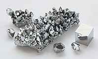

Numero atomico: 24
Massa atomica: 52,00
Temperatura di fusione (°C): 1907
Temperatura di ebolizione (°C): 2672
Energia di prima ionizzazione (kj/mol): 653
Elettronegatività (secondo Pauling): 1,66
Densità: 7,19
Numeri di ossidazione: +2+3+6
Configurazione elettronica: 1s2, 2s2, 2p6, 3s2, 3p6, 3d5, 4s1
Maggiori Informazioni